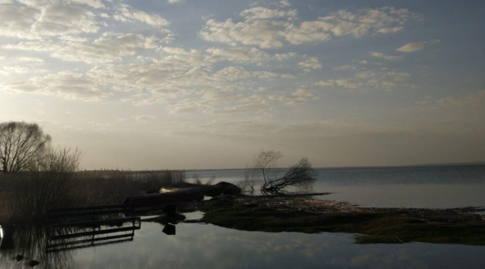
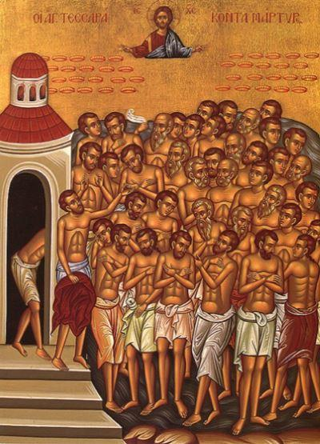

Il fait un temps de mois de mars, sans l'espoir de voir le printemps s'installer, ce qui nous attend, c'est un mois de mars à rallonge, ou bien un coup de froid en février, ou plus tard. J'ai des plantes qui commencent à sortir de terre... Tout est glissant, bourbeux et sale…
Par ce temps ignoble, le sort de la jeune chienne à la chaîne me déprime particulièrement. Elle ne sait pas où se mettre, à part dans sa niche, le sol tout autour n'est que glace mouillée. En revanche, Moustachon le chaton fait plaisir à voir. Il est tout ce qu'il y a de plus joyeux. Parfois, il franchit la chatière en trombe, traverse l'atelier comme une flèche et me saute dessus pour venir ronronner sur mon épaule, au grand scandale de Rita ou de Georgette…
Je suis retournée voir "l'orthopède" qui me propose une hospitalisation d'une semaine pour me faire toutes sortes de procédures destinées à améliorer l'état de mes articulations, sans les opérer. Il me dit que ces procédures réclament un repos complet et que si je reste chez moi, je serai forcément amenée à me déplacer. D'après lui, mes genoux ne sont pas si abîmés que cela, mais l'inflammation, la synovie, le vieux ménisque... Rester une semaine à l'hosto ne me fait pas bondir d'enthousiasme, en plus, il est sinistre. Mais que faire ? Au stade où j'en suis, je commence à avoir le plus grand mal à marcher. Et puis sans doute que l'expérience ne manquera pas de pittoresque... En prévision, j'ai commandé des livres.
Aujourd'hui, je suis allée aux vigiles de la Théophanie ou Baptême du Christ, une fête qui compte beaucoup pour moi, car c'est celle de ma conversion à l'Orthodoxie. Je me suis rendue à l'église des Quarante Martyrs de Sébaste, car j'avais vu que monseigneur Théoctyste allait bénir les eaux de la rivière Troubej, puisque l'église, construite par les pêcheurs locaux, est à l'embouchure. Je suis arrivée un peu en avance, pour pouvoir garer et admirer le coucher de soleil sur le lac. bien que l'hiver soit doux, la rivière est gelée, le lac aussi, nous ne sommes quand même pas sur la Côte d'Azur.
L'église est très jolie, entièrement refaite à l'intérieur, mais de façon très harmonieuse.
Les gens avaient l'air heureux, la Théophanie est une belle fête, et puis je crois que c'était aussi la venue de monseigneur Théoctyste qui les réjouissait. J'ai vu, du reste, que le patriarche encourageait la nomination d'évêques jeunes qui soient proches des gens, eh bien avec l'évêque Théoctyste, c'est réussi, et j'espère qu'on va nous le laisser longtemps, car nous l'aimons.
Mes genoux me faisaient vraiment souffrir, heureusement, il y avait des places assises. À côté de moi s'est installé un vieux, sa vieille lui a tendrement ébouriffé les cheveux. Puis je me suis aperçue qu'il était un peu égaré et posait sans arrêt des questions.
« Pourquoi n'arrêtes-tu pas de parler, lui demande sa femme. Pourquoi es-tu venu ici ?
- Mais... pour prier.
- Alors arrête de parler et prie.
- Je prie, mais ça ne marche pas.
- Prie comme un être humain, demande à Dieu de t'aider, et puis réfléchis un peu sur toi. »
Au moment d'aller sur la rive en procession, tout le monde s'est levé et approché, moi aussi, mais l'attente a été très longue, j'avais beaucoup de mal à rester debout, mais je ne pouvais déjà plus m'asseoir, si je voulais continuer à participer. Comme c'est bizarre, la vieillesse. Je voyais hier une vidéo où je chantais il y a dix ans, j'étais encore une jeune femme, je me prenais pour une vieille mais j'étais loin du compte. Et là, quand je me regarde dans la glace, j'ai l'impression de voir ma cousine Mathilde, et comme elle, je ne tiens plus sur mes jambes. Une jeune fille m'a fait spontanément passer près du mur pour me permettre de prendre appui.
Je me suis éloignée du cortège, dehors, et j'ai tenu jusqu'à la lecture de l'évangile. Je voyais les cierges posés sur la glace, dans la nuit, et monseigneur Théoctyste lui-même pareil à une grande flamme blanche, de loin, dans sa chasuble candide et brillante, avec sa mitre qui ressemblait à un bulbe d'église. Dans l'ombre épaisse, traversée par de froides lueurs électriques, toute cette compagnie qui chantait, priait, avec des lanternes et des bannières, était tout ce qui paraissait vivant, chaleureux, beau et rassurant, j'imaginais la berge sans eux, sans le sanctuaire, sans ces petites lumières et ces joyeux reflets, sans le carillon qui descendait sur nous, j'imaginais la Russie, le monde sans l'Église. Quelle désespérance, quelles ténèbres... « Nous avons éteint au ciel des étoiles qui ne se rallumeront plus » se vantait je ne sais plus quel républicain français. Ces étoiles, à Pereslavl, brûlaient sur la glace au pied de l'aérien, de l'immaculé monseigneur Théoctyste.
Partager cette page